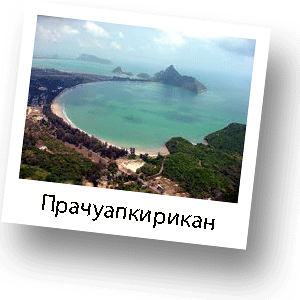
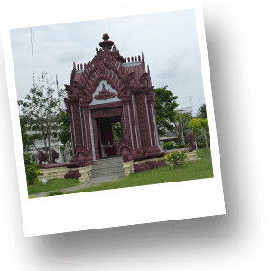
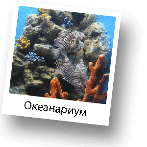

Экскурсия в удивительную провинцию Прачуапкхирикхан

Предлагаем Вам уникальную экскурсию, которая сочетает в себе посещение культурно-исторических достопримечательностей и, в то же время, носит развлекательный характер, а также представляет прекрасную возможность получить массу положительных эмоций от отдыха на одном из самых удивительных по своей красоте на территории материка пляже. Вы отправитесь в административный центр провинции Прачуапкхирикхан, в город с одноимеенным названием. Это одна из 75-ти провинций Таиланда, которая расположена вдоль побережья Сиамского залива на востоке и границы с Мьянмой на западе. Расположена между Центральным и Южным Таиландом. Город Прачуапкхирикхан находится на расстоянии 100 км. на юг от Хуа Хина.

Сам город совсем небольшой, но в нем сосредоточено, на удивление, много красивых и интересных мест. Вся администрация провинции расположена именно здесь. Экскурсионная программа очень разнообразна и составлена таким образом, чтобы Вы могли получить максимальное удовольствие от поездки. Первой остановкой будет Дворец Короля Рамы IV. Дворец расположен на горе, с которой открывается захватывающий вид на три залива и острова. Вы поднимитесь в гору, преодолев 360 ступенек. По пути Вы увидите множество диких обезьян, которые будут сопровождать Вас всю дорогу. Они абсолютно не арессивны и не причинят никакого вреда. Также, поднимаясь в гору Вы сможете остановиться на смотровых площадках, чтобы отдохнуть и сделать красивые фото снимки.

При Дворце есть действующий монастырь и рядом расположена красивая пагода. Насладившись видами и прогулявшись на горе, Вы отправитесь в сердце города Прачуапкхирикхан, на его центральную площадь. Там Вас ждет следующая остановка на которой Вы увидите центральную часть города, где построен храм в Камбоджийском стиле. На самом деле это не совсем храм. Это место, которое является начальной точкой зарождения города. Очень необычное место и оставляет магические впечатления. После посещения посещения культурно-архитектурных достопримечательностей, Вас ждет развлекательная часть нашей программы. Вы отправитесь в океанариум, который расположен на территории научного центра провинции Прачуапкхирикхан. Вы познакомитесь с жизнью обитателей подводного мира Сиамского залива, увидите больших скатов, морских коньков, черепах и, конечно же, акул. Совершите прогулку по туннелю океанариума, где, как вокруг Вас, так и над Вами, плавают самые красивые и разнообразные рыбы и морские животные. Посетив океанариум, стрелки на Ваших часа будут показывать обеденное время и, именно в этот момент, Вы отправитесь на пляж «Ао Манау», который расположен на территории авиабазы. Вас ждет прекрасный обед и отдых на необычайно красивом побережье. Вы по достоинству оцените всю красоту и великолепие окружающей природы. После отдыха на пляже у Вас, непременно, будет ощущение, что Вы побывали на островах. Это то место, куда хочется возвращаться снова и снова и каждый раз не покидает ощущение, что Вы попадаете в сказку.
Рекомендации по одежде:
Удобная одежда и обувь, полотенце, купальные принадлежности.

1300 Бат
Выезд - 9:00
1500 Бат
Возвращение - 18:00
1900 Бат
*Стоимость указана за человека
**Дети до 3 лет - бесплатно, без предоставления отдельного места в транспорте
***Дети от 3 до 10 лет - 1000 Бат
Маршрут:
Посещение Дворца короля Рамы 4, Храм в центре города в камбоджийском стиле, Океанариум, Обед, Отдых на пляже.
В стоимость включено:
Трансфер, информация о посещаемых объектах на русском языке, русскоязычная горячая линия на протяжении экскурсионной программы.
Дополнительные расходы:
Личные расходы, чаевые, все входные билеты.